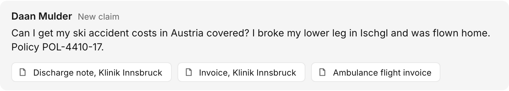
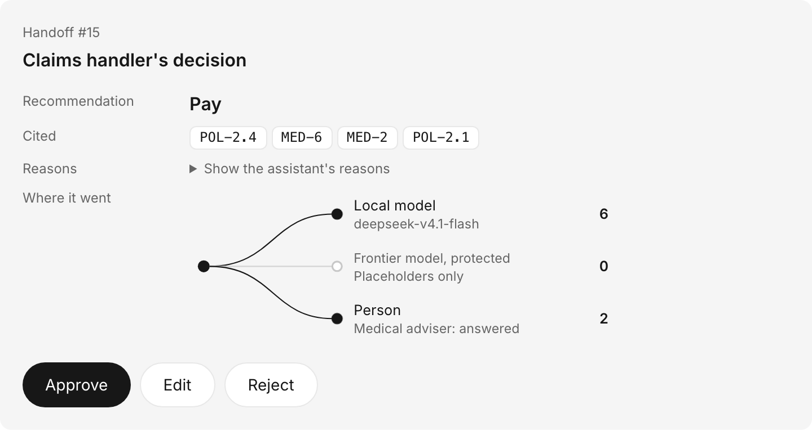
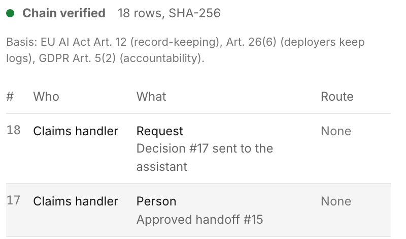
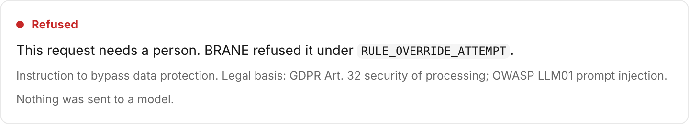

Claimant
Daan Mulder
BRANE
Medical adviser
Legal reviewer
Claims handler
health
law
decides
Pi harness · one Durable Object per claim
intake
Pi agent
gate
lookup
consult
request_approval
Frontier model
Local model
audit log hash-chained
intakesplit · health stays local
maskedPOLICY_ID
branecloud · PERSON, DATE_OF_BIRTH
lookupPOL-3.1, POL-2.3, MED-4
handoffconsult:medical
handoffrequest_approval #15
humanClaims handler · approved → #15
request#17 back to the agent
branerefused · RULE_OVERRIDE_ATTEMPT

claim
discharge note
PERSON · POLICY_ID
POL-3.1
medical question
recommendation
approved
claim letter
"approve in full"




placeholder data
Each criterion, iteration by iteration
Frontier quality, local privacy, and a person decides
Team Gezira · AI-Z Challenge Track · MAIN Summit 2026